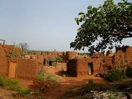

 Au coeur de la ville de Bobo-Dioulasso, le vieux quartier de Dioulasso-ba (qui signifie “la grande famille des Dioula”) commence à la Grande Mosquée – plus ancien monument du Burkina Faso.
Premier quartier construit, dont les origines remonteraient au XIème siècle, il est également à l’origine du surnom de la ville : Ville de Sya.
D’autres études plus récentes feraient remonter le quartier au XVème siècle
D’après la tradition, Sya est le nom d’une femme qui fabriquait du dolo et avait une grande réputation de générosité.
Mais l’origine serait probablement plus ancienne. Les environs étaient habités probablement dès le VIIème siècle.
Dioulasso-ba prend l’allure d’un village dans la ville.
Il compte plusieurs quartiers différents : les musulmans, les forgerons, les griots et les animistes (qui sont agriculteurs) pour une population d’environ 800 personnes sur une superficie de 15 hectares.
Le quartier est bordé des rivières du Houet et du Sanyo, son centre est occupé par une place publique : Wara wara.
L’ensemble constitue trois villages qui portent des noms : Kibidoué, Tougousso et Donoma.
Chaque village possède une maison mère, à l’origine du lignage qui l’occupe.
Les deux ethnies principales sont autochtones : Bobo-Dioula et Bobo-Madarè.
Les ruelles des quartiers sont très étroites avec des maisons imbriquées les unes dans les autres voire les unes sur les autres. Les quartiers sont séparés par des voies nettement plus larges. Les bâtiments sont essentiellement construits en banco avec un toit en terrasse en argamasse tenu par des poutres en bois. Il était possible naguère de traverser le vieux quartier en passant par les toits. Actuellement, certaines constructions ne modernisent en installant d’autres matériaux comme les parpaings en ciment et la tôle ondulée.
Les changements climatiques détériorent les constructions traditionnelles qui sont réparées avec des matériaux plus modernes ; néanmoins une prise de conscience de la valeur du patrimoine pousse des associations locales à tenter de conserver et réparer les bâtiments les plus anciens avec du matériel traditionnel.
Les lieux de culte sont nombreux, comme la Grande Mosquée, qui borde le quartier, une chapelle chrétienne bâtie lors de la colonisation, ou encore des lieux sacrés pour les animistes comme les rivières du Houet et Sanyo où on trouve les silures sacrées, symboles de la ville de Bobo-Dioulasso. Les trois religions : Islam, Christianisme et Religion Traditionnelle, cohabitent de manière pacifique. Ce quartier a su conserver ses traditions de manière étonnante : fête des masques bobo, fêtes lunaires, fêtes commémoratives, lieux interdits par la tradition, fêtes musulmanes, fêtes chrétiennes….